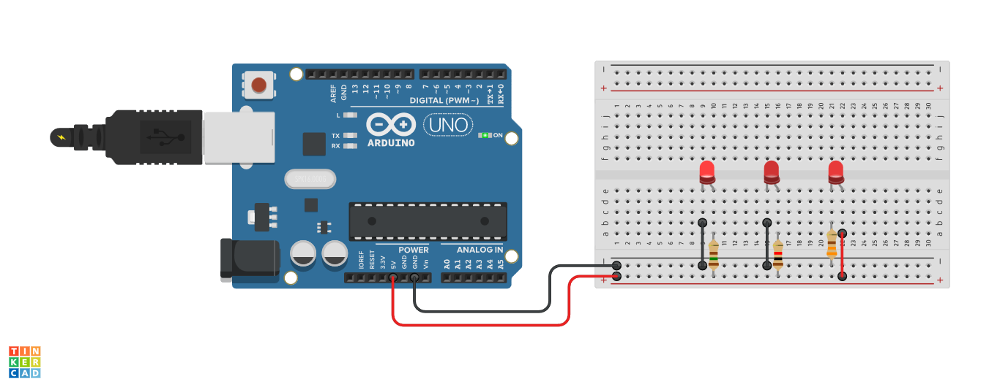

Sobre a aula:
Esta aula tem como objetivo promover a compreensão dos conceitos fundamentais relacionados a circuitos
elétricos.
Será conduzida através da construção de um circuito elétrico, utilizando componentes relacionados.
Materiais para aula:
Orientações: Ler o tema da aula e comentar com os alunos como eles podem identificar e reconhecer o que é um circuito elétrico utilizando a plataforma Arduino.
Orientações: Construa um cenário que incentive a conversa em sala de aula. Essa conversa inicial é para debater o significado da palavra circuito, que deve ser baseada em imagens e explicações sobre o assunto.
Imagem 1
Imagem 2
1. Qual a semelhança nessas imagens?
Apresentam circuitos elétricos/eletrônicos. Os dois circuitos têm uma trajetória percorrida entre um ponto a outro, normalmente tendo como objetivo final o ponto de partida.
2. Quais os componentes desses circuitos?
Observar as imagem 1 e imagem 2 e listar com os alunos.
Após o levantamento prévio do conhecimento dos alunos, apresenta-se a questão disparadora.
Orientações:
Ouça as respostas dos alunos, não é preciso fazer anotações,
pois essas discussões serão organizadas ao término desta proposta de aula.
A questão disparadora “Como podemos definir um circuito elétrico?”
tem como função observar e identificar o funcionamento da placa Arduino,
da protoboard, do resistor, dos jumpers e do LED dentro de um circuito elétrico fechado.
Orientações:
Utilizar a plataforma de simulação online Thinkercad,
para demonstrar os conceitos sobre eletrônica que estão relacionados
com a imagem 1 e imagem 2 apresentadas anteriormente.
Peça para os alunos acessarem os links dos projetos a seguir:
Descreva os componentes utilizados para construir o circuito da Imagem 1:
Imagem 3
Para fazer essa atividade, é necessário ligar três leds vermelhos com o auxílio da protoboard e jumpers
ao pino de alimentação de 5(V) Volts do Arduino. Também, serão conectados três resistores com
resistências de 150Ω, 1KΩ e 330Ω ao circuito para análise investigativa.

Imagem 4
Tinkercad - Simulador de componentes eletrônicos;
Plano de aula - Circuitos Elétricos Aberto;
Plano de aula - Circuitos Elétricos Fechados;
Guia de Componentes
Eletrônicos;
O que é um Arduino Uno?
O que é uma Protoboard?
O que são Jumpers?
Eletrogate - Apostilas didáticas
gratuitas.